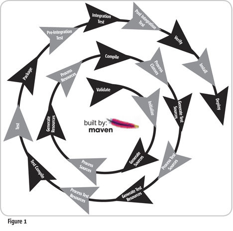

Agenda
Things we'll (try to) cover;
- Maven
- Yeoman
- Grunt
- Bower
- TDD
- Repository workflow
DRCS/SCM workflow
Doing it right?
Maven
Maven
Build manager for Java projects

Maven
Build manager for Java projects
Maven provides developers ways to manage :
- Builds
- Documentation
- Reporting
- Dependencies
- SCMs
- Releases
- Distribution
- mailing list
Demo Project
part 1
Backend : Using maven archetypes!
True story!
public static final String DATE_PATTERN = "dd-mm-yyy"; .... final DateFormat format = new SimpleDateFormat(DATE_PATTERN);
@Before
public void setUp() throws Exception {
validDate = "10-04-2004";
}
@Test
public void testValidGregorianDate() throws Exception {
....
assertEquals(xmlGregorianCalendar.getDay(), 10);
}
:-S
public static final String DATE_PATTERN = "dd-MM-yyy"; .... final DateFormat format = new SimpleDateFormat(DATE_PATTERN);
@Before
public void setUp() throws Exception {
validDate = "10-04-2004";
}
@Test
public void testValidGregorianDate() throws Exception {
....
assertEquals(10, xmlGregorianCalendar.getDay());
assertEquals(4, xmlGregorianCalendar.getMonth());
assertEquals(2004, xmlGregorianCalendar.getYear());}

TDD
Java ecosystem
| JMockit | JTiger | SpryTest | Jtest | JUnit | JWalk | TestNG | Needle | |
| NUTester | Concordion | JExample | DbUnit | JUnitEE | Cactus | JSST | GroboUtils | |
| Mockrunner | Unitils | JBehave | Instinct | JDave | beanSpec | Cucumber-JVM | XMLUnit | |
| EasyMock | JMock | Mockito | Concutest | SureAssert | PowerMock | Jukito | GrandTestAuto |
Yeoman, Grunt and Bower
Frontend Workflow
Yeoman
Scaffolds out a new application
- Installation
npm install -g yo npm install -g generator-webapp npm install -g generator-angular
- Usage (with AngularJS generator):
yo angular

Writes our Grunt configuration, pulling it in relevant Grunt tasks that we need for our build.
Grunt
Build, preview and test your project
Basically; Grunt is a JavaScript task runner which you can think of as Ant for JavaScript. It has a vast ecosystem of predefined tasks, some of which are maintained by the core team and many contributed by the community.
Installation
# already installed with Yo npm install -g grunt-cliUsage (with the AngularJS generator):
grunt test grunt server grunt

Bower
dependency management
# already installed with Yo npm install -g bower
Usage:
echo "alias bower='noglob bower'" >> ~/.zshrc # Using the dependencies listed in the current # directory's bower.json bower install # Using a local or remote package bower install <package> bower install angular-ui # Using a specific version of a package bower install <package>#<version> # Using a different name and a specific version # of a package bower install <name>=<package>#<version>

Demo Project
part 2
Frontend dev. with Yeoman

TDD again!
Ecosystem in JS..
| Suitest | DOH | LBRTW UT | JSUnit | Enhance JS | QUnit | RhUnit | Crosscheck | |
| J3Unit | Mocha | intern | JSNUnit | YUI Test | JSSpec | UnitTesting | JSpec | |
| Jasmine | screw-unit | Test.Simple | Test.More | TestCase | TestIt | jsUnitTest | JSTest | |
| JSTest.NET | jsUnity | RhinoUnit | JasUnit | FireUnit | Js-test-driver | Js-test-runner | Sinon.js | |
| SOAtest | Vows | Nodeunit | Tyrtle | wru | Buster.JS |
TDD again!
in JS..
Protractor
just for AngularJS
Protractor
PhantomJS and SlimerJS

Debugging AngularJS
Batarang

Yeoman's dist
- Recompiling all CoffeeScript and SASS files for production
- Using r.js to compile and optimize any AMD modules
- Concatenation and minification of scripts and stylesheets
- Compressing your images using OptiPNG for PNG files and JPEGtran-turbo for JPEGs
- Creating an Application Cache manifest via Confess.js
- Using revision filenames or oldernames
Maven & Yeoman
What are the options?
We don’t know how to integrate Grunt tooling into our Maven workflow. Even after setting up Node on our dev. box, there’s no documentation about using Maven with Grunt and everyone seems to want it but there are no blessed solutions out there.
- Consider your backend and front-end code as completely separate entities
- Ignore modern tooling altogether.
- Use the Maven-exec plugin to call out to Grunt from your existing build process
Maven and Yo/Grunt : yeoman-maven-plugin
Declare the plugin:
<plugin>
<groupId>com.github.trecloux</groupId>
<artifactId>yeoman-maven-plugin</artifactId>
<version>0.1</version>
<executions>
<execution>
<goals>
<goal>build</goal>
</goals>
</execution>
</executions>
</plugin>
Maven and Yo : maven-war-plugin
Add the yeoman dist directory to our WAR file:
<plugin>
<artifactId>maven-war-plugin</artifactId>
<version>2.4</version>
<configuration>
<webResources>
<resource>
<directory>yo/dist</directory>
</resource>
</webResources>
</configuration>
</plugin>
Maven and Yo : maven-clean-plugin
And clean the generated directories:
<plugin>
<artifactId>maven-clean-plugin</artifactId>
<version>2.5</version>
<configuration>
<filesets>
<fileset>
<directory>yo/dist</directory>
</fileset>
<fileset>
<directory>yo/.tmp</directory>
</fileset>
<fileset>
<directory>yo/app/components</directory>
</fileset>
<fileset>
<directory>yo/node_modules</directory>
</fileset>
</filesets>
</configuration>
</plugin>
Maven and Bower : exec-maven-plugin
Gerbrand van Dieijen's Bower-maven Dependency management :
<plugin>
<groupId>org.codehaus.mojo</groupId>
<artifactId>exec-maven-plugin</artifactId>
<executions>
<execution>
<phase>generate-sources</phase>
<goals>
<goal>exec</goal>
</goals>
</execution>
</executions>
<configuration>
<executable>bower</executable>
<arguments>
<argument>install</argument>
</arguments>
<workingDirectory>${basedir}/src/main/webapp</workingDirectory>
</configuration>
</plugin>
What about Jetty? jetty-maven-plugin
We can integrate Jetty as well:
<plugin>
<groupId>org.mortbay.jetty</groupId>
<artifactId>jetty-maven-plugin</artifactId>
<version>8.1.4.v20120524</version>
<configuration>
<stopKey>foo</stopKey>
<stopPort>8000</stopPort>
<reload>manual</reload>
<webAppConfig>
<contextPath>/${project.name}</contextPath>
<baseResource implementation="org.eclipse.jetty.util.resource.ResourceCollection">
<resourcesAsCSV>src/main/webapp,yo/dist</resourcesAsCSV>
</baseResource>
</webAppConfig>
</configuration>
</plugin>
Releasing
<plugin>
<groupId>org.apache.maven.plugins</groupId>
<artifactId>maven-release-plugin</artifactId>
<version>${maven-release-plugin.version}</version>
<configuration>
<autoVersionSubmodules>true</autoVersionSubmodules>
<goals>deploy</goals>
<pushChanges>false</pushChanges>
<localCheckout>true</localCheckout>
<tagNameFormat>v@{project.version}</tagNameFormat>
</configuration>
</plugin>
<scm> <connection>scm:git:https://xxx/xxx.git</connection> <developerConnection>scm:git:https://xxx/xxx.git</developerConnection> <url>https://xxx/xxx.git</url> </scm>
Releasing
With pure git (git flow)
git checkout develop git branch Version_1.0 git checkout Version_1.0 mvn release:prepare -B mvn release:clean mvn release:prepare release:perform -B git tag -d v-1.0 git checkout master git fetch origin master git merge –no-ff Version_1.0 git tag -a Version_1.0 git push origin master git checkout develop git fetch origin develop git merge –no-ff Version_1.0 git push origin develop git branch –d Version_1.0
Releasing
With git-flow
git checkout develop git flow release start v-1.0 mvn release:prepare -B mvn release:clean mvn release:prepare release:perform -B git tag -d v-1.0 git flow release finish -p 1.0
Releasing
With jgitflow
git checkout develop mvn clean jgitflow:release-start mvn jgitflow:release-finish
<build>
<plugins>
<plugin>
<groupId>com.atlassian.maven.plugins</groupId>
<artifactId>maven-jgitflow-plugin</artifactId>
<version>1.0-alpha20</version>
<configuration>
<!-- see goals wiki page for configuration options -->
</configuration>
</plugin>
</plugins>
</build>
What about Gradle??
The quick and dirty way of doing it would just be to either hard code some grunt.execute().text ...
task requirejs(type: Exec) {
commandLine 'grunt', 'requirejs'
}

Conclusions ??
- The new web development Architecture demands a better back-end and front-end integration.
- On projects where the front-end and back-end are somewhat coupled, using Maven as our primary build system with binaries like Grunt and Bower called out as needed is completely feasible.
- For new projects, keeping these two pieces distinctly separate comes with the flexibility to use whatever tooling chain you want, including just using Grunt for your front-end.
<Thank You!>